The Data Governance Bedrock
Domain Discovery, Message Flow & Strategic Context Mapping (TOGAF® ADM Phase C & DDD Strategic Design)

"We arrive at the top of the supply chain: Terra-Resource. Look at the mining pits below. Decades of heavy machinery have generated petabytes of fragmented, dirty data. In Chapter 4, Volt-Tech's Phase B Business Architecture established a horizontal partner scaling strategy and a Smart Battery blueprint with edge TinyML intelligence. But as Rajesh Iyer emphasized: predictive edge models cannot guarantee zero defects if the raw lithium, nickel, and cobalt from these mines contains untracked chemical impurities and unverified provenance."
"Now, Aarav Patel (Risk Guardian) and Neha Desai (Fiscal Architect) face a crisis session: Volt-Tech will reject their shipments unless every batch of lithium comes with a cryptographically verified 'Data Passport.' But before they can build Data Architecture, they must first discover their domain. Let us watch them apply Domain-Driven Design strategic techniques to build the Data Bedrock."
The Storyline: Crisis at the Extraction Command Center
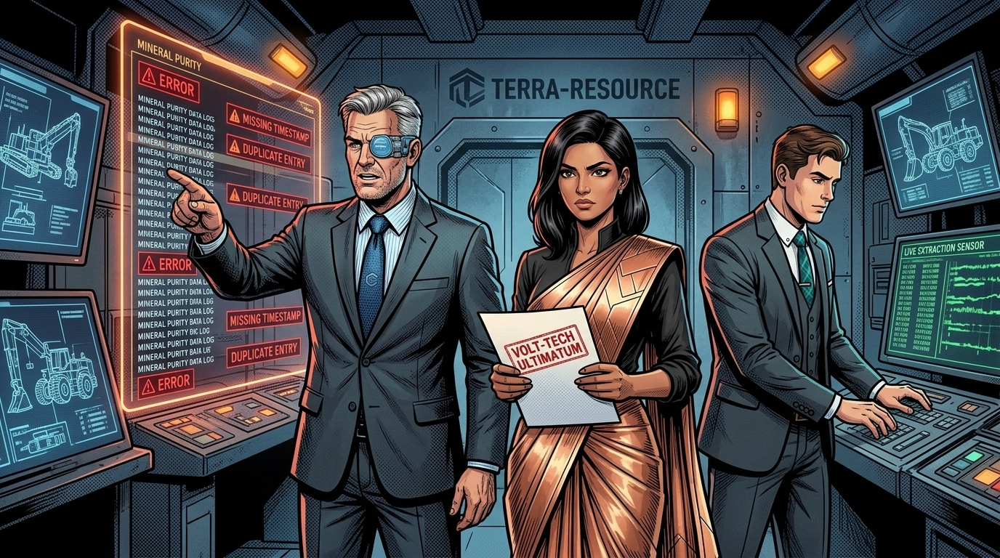
"Enterprise Architecture Mentor Insight: Why Domain-Driven Design? Neha's demand cuts to the heart of a critical gap in traditional enterprise architecture. TOGAF ADM Phase C prescribes building Data Architecture and Application Architecture, but it does not prescribe how to discover the domain boundaries that organize that architecture. This is where Domain-Driven Design (DDD) — the strategic design methodology pioneered by Eric Evans — becomes indispensable."
"DDD provides three powerful techniques that we will apply in sequence: Event Storming (discovery), Domain Message Flow Modeling (communication design), and Context Mapping (strategic integration). Together, they form a rigorous pipeline from domain discovery to architectural blueprint. Let us watch Terra-Resource's team apply each one."
1. The DDD Strategic Design Pipeline: From Discovery to Architecture
Before diving into the techniques, it is essential to understand how they connect. Domain-Driven Design's strategic tools form a discovery-to-design pipeline that progressively transforms raw domain knowledge into deployable architecture. Each stage builds upon the outputs of the previous one, creating a traceable chain from business reality to system boundaries.
2. Event Storming: Discovering the Terra-Resource Domain[3]
Event Storming, created by Alberto Brandolini[3], is a collaborative workshop technique where domain experts, architects, and engineers explore the entire business domain using colored sticky notes on a long timeline wall. Unlike traditional requirements gathering, Event Storming forces cross-functional discovery by starting with what happens (domain events) rather than what the system should do (requirements).
2.1 The Workshop: Three Progressive Levels
Brandolini defines three levels of Event Storming, each progressively more detailed. Terra-Resource's architecture team will execute all three to build a complete domain model.
| Level | Focus | Participants | Key Artifacts Produced | Duration |
|---|---|---|---|---|
| Big Picture | Entire domain landscape | All stakeholders, domain experts, executives | Domain events timeline, pivotal events, hotspots, swimlanes | ≥60 min |
| Process Level | Specific business workflows | Domain experts, architects, product owners | Commands, events, policies, actors, external systems, bounded context boundaries | ≥90 min |
| Design Level | Tactical design within bounded contexts | Domain experts, architects, developers | Aggregates, event schemas, read models, command validation rules, integration contracts | ≥120 min |
"Enterprise Architecture Mentor Insight: Design-Level Event Storming. For Terra-Resource, we need all three levels. The Big Picture reveals the thirty-year timeline of extraction operations. The Process Level maps the mineral-to-passport workflow. But only Design-Level Event Storming gives us the aggregates, read models, and integration contracts required to build TOGAF Phase C data schemas. This is where Brandolini's 'Picture That Explains Everything' emerges."

MineralBatchExtracted. DrillPressureRecorded. SensorCalibrationCompleted. We are not designing a system yet — we are discovering the domain."
2.2 Event Storming Notation: The Sticky Note Color Code
Every element in Event Storming is represented by a specific color of sticky note. This visual language ensures instant recognition across workshop participants:
| Artifact | Color | Description | Terra-Resource Example |
|---|---|---|---|
| Domain Events | 🟠 Orange | Facts about things that happened in the domain. Written in past tense. | MineralBatchExtracted, PurityAnalysisCompleted |
| Commands | 🔵 Blue | Intentful actions that trigger events. Written in imperative mood. | ExtractMineralBatch, AnalyzePurity |
| Aggregates | 🟡 Yellow (large) | Consistency boundaries that accept commands and produce events. | MineralBatch, ExtractionDrill |
| Policies | 🟣 Lilac/Purple | Reactive rules: "When [event] then [command]" automation. | "When PurityBelowThreshold, then QuarantineBatch" |
| Read Models | 🟢 Green | Views/projections that support decision-making. | Extraction Yield Dashboard, ESG Compliance Report |
| External Systems | Pink | Systems outside the domain boundary. | Volt-Tech DPP Registry, Government ESG Portal |
| Actors | 👤 Small Yellow | Users or roles that issue commands. | Drill Operator, Geochemist, Compliance Officer |
| Hotspots | 🔴 Red (rotated) | Areas of confusion, conflict, or risk needing further investigation. | "30 years of unstructured purity logs?" |
2.3 Terra-Resource Event Storming Output: The Mineral-to-Passport Timeline
After two days of intensive workshops with drill operators, geochemists, logistics coordinators, compliance officers, and the enterprise architecture team, Terra-Resource produced the following Event Storming timeline for the end-to-end mineral extraction and digital passport creation process:
2.4 Aggregate Design: Consistency Boundaries
From the Event Storming output, the architecture team identifies the core Aggregates — the consistency boundaries that enforce business invariants within each bounded context:
| Bounded Context | Aggregate Root | Key Entities | Key Value Objects | Invariants Enforced |
|---|---|---|---|---|
| Extraction Operations | MineralBatch |
BatchSegment, DrillHole | GeoCoordinate, Depth, Weight | Batch must have valid GPS & timestamp; weight > 0 |
ExtractionDrill |
SensorArray, MaintenanceLog | DrillPressure, RPM, Temperature | Sensor calibration must be current; drill pressure within safety limits | |
| Geochemical Analysis | PurityRecord |
LabSample, ContaminantReport | PurityPercentage, ElementComposition | Lithium purity ≥ 99.5% for battery-grade; contaminants < 50ppm |
| ESG & Compliance | ComplianceFiling |
AuditTrail, RegulatorySubmission | ESGScore, EmissionLevel, FilingDate | Filing must be immutable after submission; all fields validated |
| Digital Passport | DigitalProductPassport |
ProvenanceChain, CryptoSignature | BatchHash, IssuerCertificate | DPP must be cryptographically signed; chain must be complete from drill to shipment |
2.5 TOGAF® Data Entity to Business Function CRUD Matrix[1][5]
In accordance with TOGAF® Phase C data architecture guidance, DAMA-DMBOK2 standards, and Consortium Rule DAT-02, every core data entity must have unambiguous lifecycle ownership across enterprise functions, verifying that each entity has at least one authoritative Create (C) and Read (R) operation:
| Data Entity / Aggregate | Mineral Extraction | Geochemical Assay | ESG Compliance | DPP Issuance Engine | Volt-Tech Cell Intake | Regulatory Audit |
|---|---|---|---|---|---|---|
MineralBatch |
C, R, U | R, U | R | R | R | R |
ExtractionDrill |
C, R, U | R | — | — | — | — |
PurityRecord |
— | C, R, U | R | R | R | R |
ComplianceFiling |
— | — | C, R, U | R | — | R |
DigitalProductPassport |
— | — | — | C, R | R | R |
LegacyAssayRecord |
R | R, U (ACL) | R | — | — | R |
2.6 Data Entity System of Record (SoR) Designation Table
In accordance with Consortium Architecture Rule DAT-01 (codified under TOGAF Phase C), every enterprise data entity must have exactly one authoritative System of Record (SoR) with strictly bounded downstream systems of engagement:
| Core Data Entity | Designated System of Record (SoR) | Context Custodian | Downstream Systems of Engagement (SoE) | Manual Override Permitted? |
|---|---|---|---|---|
MineralBatch |
Edge HSM-signed telemetry lakehouse (Extraction Context) | Terra-Resource Field Engineering | Volt-Tech Intake API, EU Regulatory Portal | No — Immutable at Source |
PurityRecord |
Automated LIBS Assay Pipeline (Geochem Context) | Terra-Resource Laboratory Team | Volt-Tech PPAP, DPP Minting Service | No — ACL Quarantine Only |
DigitalProductPassport |
DPP Trust Engine (HSM-signed Protobuf) | Joint Standards Council / EAB | Volt-Tech, Orbit-Logistics, EU Regulators | No — Cryptographically Sealed |
ComplianceFiling |
ESG Append-Only Regulatory Ledger | Terra-Resource ESG Governance Lead | Government Environmental Portal | No — Append-Only Audit |
BatteryPackRecord |
Volt-Tech Pack Assembly MES System | Volt-Tech Manufacturing EARB | Orbit-Logistics Fleet Registry, EAB Vault | No — DPP Trace Appended |
FleetTelemetryEvent |
Orbit-Logistics Sovereign Telemetry Lakehouse | Orbit-Logistics Architecture EARB | EAB Joint Governance Dashboard | No — Raw Events Immutable |
2.7 Data Security & Regulatory Classification Register
In accordance with Consortium Architecture Rule DAT-03 (codified under TOGAF Phase C), all data assets across the extraction and passport pipeline are assigned formal security tiers with explicit encryption, retention, and access policies:
| Data Asset / Stream | Classification Tier | Regulatory Governance | In-Transit Encryption | At-Rest Encryption | Retention SLA | Access Authorization |
|---|---|---|---|---|---|---|
| Mineral Batch Telemetry | Confidential (Tier 3) | EU Battery Reg. 2023/1542 | TLS 1.3 + HSM Signatures | AES-256 (Cloud Lakehouse) | 10 Years | Field Engineers; EAB Read-Only |
| Purity Chemical Assay | Confidential (Tier 3) | EU REACH; Vendor IP | TLS 1.3 (mTLS) | AES-256 (Lab Store) | 10 Years | Lab Scientists; Volt-Tech (via OHS) |
| ESG Environmental Filings | Internal (Tier 2) | EU CSRD Reporting | TLS 1.3 | AES-256 | 7 Years | ESG Compliance; Regulators (API) |
| Digital Product Passport (Minted) | Public (Tier 1) | EU Battery Directive / AI Act | TLS 1.3 + SHA-256 Proof | AES-256 + Blockchain Anchor | Battery Lifetime + 5 Yrs | Public OHS API; Ecosystem Partners |
| GPS Drill Operation Coordinates | Restricted (Tier 4) | Trade Secret / Mineral Rights | TLS 1.3 + HSM Isolation | AES-256 (Dedicated HSM Store) | 5 Years | Senior Terra-Resource Execs Only |
| Historical Legacy Assay (Pre-ACL) | Restricted (Tier 4) | Litigation Hold / Audit | TLS 1.3 | AES-256 (Quarantine Bucket) | 30 Years | Legal Counsel; EAB Audit Committee |
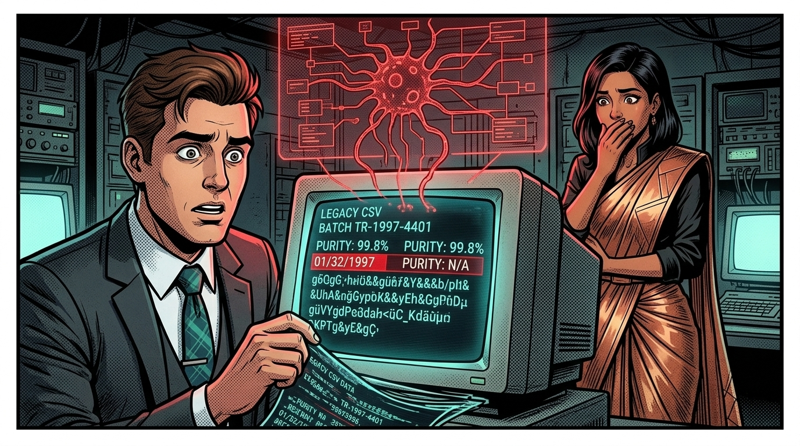
3. Domain Message Flow Modeling: Designing Inter-Context Communication[4]
With bounded context boundaries identified through Event Storming, the next critical question is: How do these contexts communicate? Domain Message Flow Modeling — a technique popularized by Nick Tune and the DDD Crew[4] — answers this by tracing the flow of commands, events, and queries across context boundaries for specific business scenarios.
3.1 Why Message Flow Modeling Matters
What Message Flow Reveals
- Integration Dependencies: Which contexts depend on which, and in what direction?
- Sync vs. Async Design: Should communication be synchronous (commands/queries) or asynchronous (events)?
- Boundary Validation: If message flows are overly complex or circular, the boundaries may need adjustment.
- Contract Design: What data must cross each boundary, informing Protobuf/JSON schema contracts.
Message Types
- 🔵 Commands: Directed at a specific context. Imperative mood. (
AnalyzePurity) - 🟠 Domain Events: Published by one context, consumed by many. Past tense. (
PurityValidated) - 🟢 Queries: Read-only requests for information. (
GetBatchProvenance)
"Enterprise Architecture Mentor Insight: The Bridge Between Discovery and Design. Nick Tune calls Domain Message Flow Modeling 'the bridge between the tactical discoveries of Event Storming and the strategic decisions of Context Mapping.' Without it, teams draw context maps based on gut feeling rather than evidence. By tracing real business scenarios across proposed boundaries, we validate that our bounded contexts actually support the operational reality."
3.2 Scenario: End-to-End Mineral Batch Processing
Let us trace the complete message flow for Terra-Resource's most critical business scenario: a mineral batch extracted from the mine, analyzed for purity, cleared for ESG compliance, and issued a Digital Product Passport for shipment to Volt-Tech.
3.3 Message Flow Analysis: Key Findings
Integration Pattern Evidence
- Predominantly Event-Driven: Steps ②→③, ④→⑤, and ⑥→⑦ are all asynchronous event-to-command chains. This validates a publish-subscribe architecture pattern.
- Clear Upstream/Downstream Flow: Data flows from Extraction → Geo Analysis → ESG → DPP, establishing a natural upstream-to-downstream supply chain within the domain.
- Single External Integration Point: Only the Digital Passport context communicates with external systems (Volt-Tech), creating a natural Anti-Corruption Layer boundary.
- Cross-Domain Query: ESG queries government regulatory thresholds, indicating a Conformist relationship with external regulations.
Boundary Validation Results
- No Circular Dependencies: Messages flow strictly left-to-right, confirming well-defined boundaries.
- Minimal Cross-Boundary Payloads: Each message carries compact data (
BatchId,PurityPercentage,ESGScore), not entire domain objects. - Policy-Driven Automation: The Quarantine and Auto-Passport policies span boundaries, indicating process managers that should be modeled explicitly.
4. Context Mapping: Strategic Integration Design
With bounded context boundaries validated through message flow modeling, we now formalize the relationships between contexts using Context Mapping — the strategic design technique introduced by Eric Evans and elaborated by Vaughn Vernon. A Context Map is not just a technical diagram; it captures organizational power dynamics, team relationships, and integration strategies — the socio-technical reality that determines whether architecture succeeds or fails in practice.
4.1 The Nine Context Mapping Patterns
DDD defines nine standard patterns that describe how bounded contexts relate to each other. Terra-Resource must select the appropriate pattern for each relationship based on team dynamics, organizational constraints, and technical requirements:
| Pattern | Abbrev. | Description | When to Use | Relationship |
|---|---|---|---|---|
| Partnership | P | Two teams succeed or fail together. Joint planning and synchronized evolution. | Mutually dependent teams with aligned objectives | Symmetric |
| Shared Kernel | SK | Two contexts share a small, explicitly defined model subset. | Overlapping models where duplication is worse than coupling | Symmetric |
| Customer–Supplier | CS | Upstream provides, downstream negotiates requirements. | Clear provider/consumer with downstream bargaining power | U → D |
| Conformist | CF | Downstream adopts upstream model wholesale, no negotiation. | External systems, regulatory APIs, legacy constraints | U → D |
| Anti-Corruption Layer | ACL | Downstream builds a translation layer to isolate its model. | Integrating with legacy systems or incompatible models | U → D (with protection) |
| Open Host Service | OHS | Upstream provides a well-defined, stable API for multiple consumers. | When upstream serves multiple downstream consumers | U → D |
| Published Language | PL | A well-documented shared data format (Protobuf, JSON Schema, Avro). | Standard interchange format; often combined with OHS | Data standard |
| Separate Ways | SW | No integration. Each context operates independently. | Integration cost exceeds benefit | None |
| Big Ball of Mud | BBoM | No clear boundaries. A pragmatic recognition of legacy chaos. | Map it, isolate it, and put an ACL around it | Diagnostic |
4.2 Terra-Resource Strategic Context Map
Based on the Event Storming outputs and Domain Message Flow analysis, the architecture team now constructs the formal Context Map for the Terra-Resource extraction domain and its integration with the broader Smart Mobility Ecosystem:
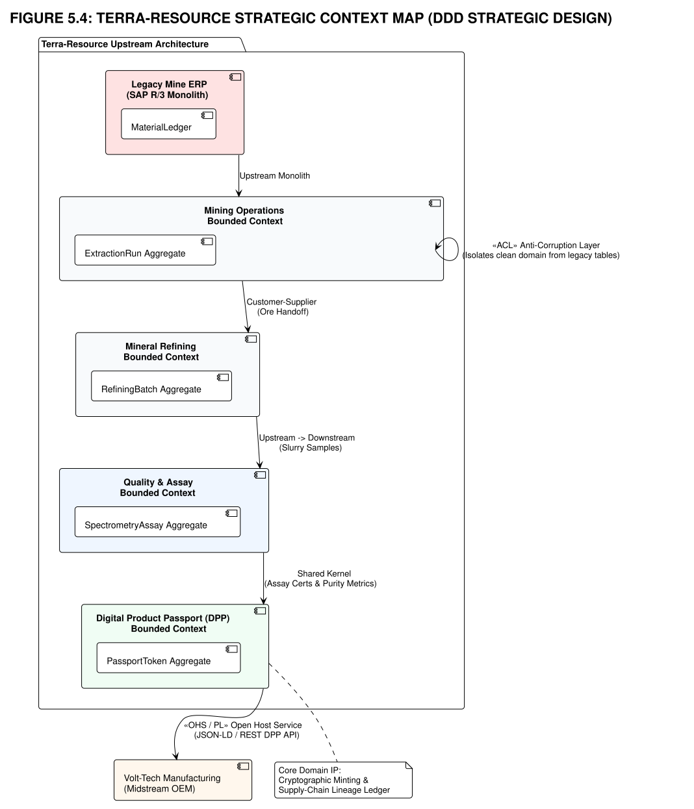
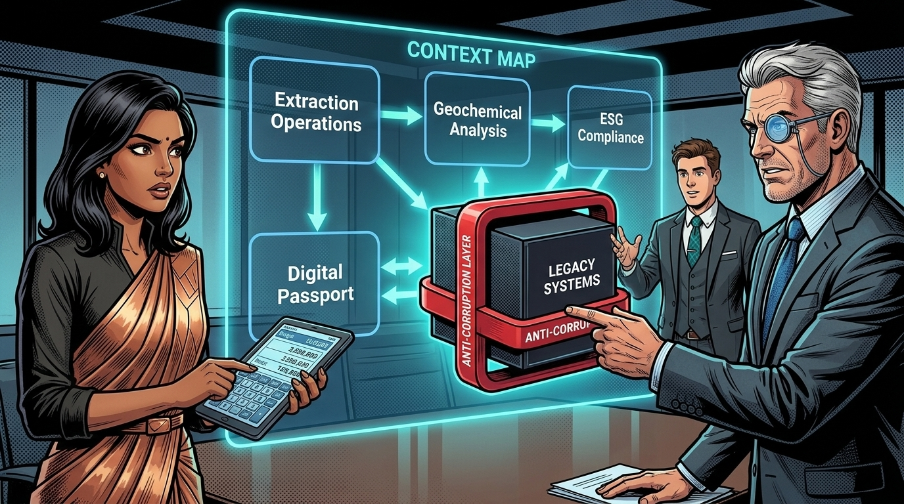
4.3 Context Mapping Decisions: The Architecture Board Review
| Relationship | Pattern | Rationale | Implementation |
|---|---|---|---|
| Extraction → Geo Analysis | Customer–Supplier (U/CS) | Extraction team (upstream) provides batch samples; Geo Analysis team (downstream) negotiates purity testing requirements. Both teams are internal and can coordinate. | Async event bus (Kafka). MineralBatchExtracted event triggers AnalyzePurity command. |
| Extraction → ESG | Customer–Supplier (U/CS) | Extraction provides environmental telemetry; Compliance team requests specific metrics for regulatory reporting. | Event-driven. Environmental readings published alongside extraction events. |
| Geo Analysis → Digital Passport | Customer–Supplier (U/CS) | Purity records flow downstream to passport generation. DPP team defines what purity data format it needs. | Protobuf schema contract. PurityValidated event carries standardized element composition. |
| ESG → Digital Passport | Customer–Supplier (U/CS) | ESG clearance is a prerequisite for passport issuance. DPP team needs a signed compliance certificate. | ESGComplianceCleared event includes cryptographic compliance hash. |
| Digital Passport → Volt-Tech | Open Host Service / Published Language (OHS/PL) | DPP context serves multiple external consumers (Volt-Tech, Tier-1 gigafactories, Orbit-Logistics) via a single stable API. | REST API with Protobuf Published Language. Versioned schema (v1, v2). |
| Digital Passport → Orbit-Logistics | Open Host Service / Published Language (OHS/PL) | Same API serves Orbit for downstream traceability verification. | Same OHS endpoint as Volt-Tech; read-only provenance query. |
| ESG → Govt. Regulatory Portal | Conformist (CF) | Government API is non-negotiable. Terra-Resource must conform to regulatory data formats and thresholds. | ESG context adopts government XML schema directly. No negotiation possible. |
| Legacy Systems → All Contexts | Anti-Corruption Layer (ACL) | 30 years of unstructured CSV files, paper logs, and inconsistent databases. Must be isolated to prevent legacy corruption from leaking into new domain models. | Dedicated data pipeline with schema validation, deduplication, and canonical format transformation. |
"Enterprise Architecture Mentor Insight: Context Maps Are Organizational Maps. As Mathias Verraes emphasizes, context mapping is as much about politics and organizational culture as it is about technology. By explicitly mapping who is upstream and who is downstream, we proactively manage coupling, reduce friction, and leverage Conway's Law as a strategic asset."
"Notice how the Digital Passport context uses an Open Host Service with Published Language (OHS/PL) to serve multiple external consumers through a single stable API. This is a deliberate architectural decision: rather than building custom integrations for Volt-Tech, Orbit-Logistics, and future Tier-1 partners separately, we invest in a well-documented, versioned Protobuf schema that any qualified consumer can adopt."
4.4 Multi-Enterprise Ecosystem Context Map: The Full Supply Chain View
While Figure 5.4 maps the internal boundaries of Terra-Resource, true enterprise architecture requires zooming out to the entire multi-enterprise ecosystem. In modern industrial AI, data governance cannot stop at corporate perimeter firewalls. Below is the master strategic context map connecting all three enterprises — Terra-Resource (Upstream), Volt-Tech Manufacturing (Midstream), and Orbit-Logistics (Downstream) — anchored by the cross-enterprise Enterprise Architecture Board (EAB) governance layer.
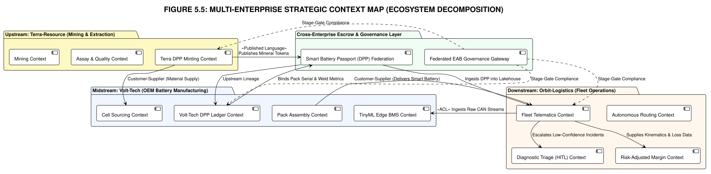
4.5 End-to-End Multi-Enterprise Message Flow (The Full Value Stream)
To demonstrate the operational coherence of this multi-enterprise context map, let us trace a single mineral particle from its underground extraction at Terra-Resource all the way to its real-time telemetry execution on a 40-ton autonomous truck operated by Orbit-Logistics:
| Step | Enterprise & Bounded Context | Message / Event Triggered | Architectural Mechanism | Fiduciary Outcome |
|---|---|---|---|---|
| 1 | Terra-Resource: Extraction Ops | MineralBatchExtracted (Event) |
Edge sensors capture GPS, depth, and drill pressure in real-time. | Physical batch provenance anchored at source. |
| 2 | Terra-Resource: Geochemical Lab | PurityAnalysisCompleted (Event) |
Chemical assay validates lithium purity ≥ 99.82%, iron < 12ppm. | Eliminates dirty raw material liability before shipment. |
| 3 | Terra-Resource: ESG & Compliance | ESGComplianceCleared (Event) |
Automated audit confirms environmental permit and water reclamation bounds. | Zero ESG regulatory penalty risk under EU supply chain mandates. |
| 4 | Terra-Resource: Digital Passport | DigitalPassportIssued (Event / OHS) |
Batch hash cryptographically signed into DPP-88210 and published via Protobuf. |
Creates immutable upstream data asset. |
| 5 | Volt-Tech: Cell Supply & PPAP | CellBatchQualified (Command / Ingestion) |
Tier-1 Gigafactory fabricates cylindrical cells using DPP-88210; Volt-Tech QA verifies. | 99.4% cell yield; zero in-house chemical CapEx drain. |
| 6 | Volt-Tech: Battery BMS Intelligence | SmartBatteryPackCommissioned (Event) |
Silicon-to-Cloud Fusion Pod flashes INT8 TinyML model with low-SoC power derating. | Sub-10ms hesitation detection operational inside 180KB RAM. |
| 7 | Volt-Tech: Smart Truck Assembly | SmartTruckDelivered (Event) |
Pack mated to Truck Chassis #VT-904 with ASIL-D lockstep microcontroller security. | Fulfills commercial delivery contract to Orbit-Logistics. |
| 8 | Orbit-Logistics: Depot Charging Ops | DepotChargingSessionLogged (Event) |
Truck dispatched at 48% SoC due to turnaround constraints; logged to immutable ledger. | PSoC condition recorded with cryptographic timestamp (ACR-04). |
| 9 | Orbit-Logistics: Autonomous Fleet | BMSDegradationMitigated (Event / Telemetry) |
Truck pulls heavy uphill torque; TinyML detects sub-cycle voltage sag in 8.2ms and throttles power by 25%. | Zero roadside battery collapse; $50M fleet bleed prevented! |
| 10 | Joint EAB: Warranty Escrow Layer | WarrantySLAValidated (Audit Event) |
Escrow engine cross-references DPP logs with charging session; mutual SLA honored. | Eliminates finger-pointing and customer-supplier litigation. |
4.3 Orbit-Logistics: Mapping DDD Bounded Contexts to SCOR Delivery Processes & Metrics
In downstream fleet execution, Domain-Driven Design bounded contexts align directly with the six SCOR Delivery Service stages to enforce continuous performance metrics:
1. Autonomous Dispatch & Dynamic Routing Context — SCOR Plan (sP) & Deliver (sD)
- SCOR Focus: Forecasting delivery volumes, dynamic courier/AV route optimization, and last-mile parcel drop-offs.
- Core Domain Events:
DeliveryVolumeForecasted,OptimalRouteComputed,ShipmentDispatched,ProofOfDeliveryVerified. - Enforced Metrics: Perfect Shipment Delivery (≥99.8%) and Order Fulfillment Cycle Time (≤1.5 hrs).
2. Fleet Telematics & Ingestion Context — SCOR Enable (sE)
- SCOR Focus: Running edge tracking software, ingesting sub-50ms CAN sensor streams, and auditing EU AI Act safety compliance.
- Core Domain Events:
CANTelemetryIngested,BatterySOHSampled,SafetyComplianceVerified. - Enforced Metrics: Continuous telemetry latency (≤50ms) and active regulatory audit trails.
3. Risk-Adjusted Margin Engine Context — SCOR Cost (CO)
- SCOR Focus: Loaded per-stop and per-mile P&L attribution, factoring power consumption, teleoperator interventions, and depreciation.
- Core Domain Events:
RouteCostCalculated,MarginThresholdAudited,InterventionExpenseAttributed. - Enforced Metrics: Cost per Stop / Cost per Mile (≤$1.85/mile) to eliminate the $50M quarterly bleed.
4. Diagnostic & HITL Triage Context — SCOR Return (sR) & Asset Management (AM)
- SCOR Focus: Failed delivery handling, automated redelivery rescheduling, remote tele-assist intervention, and upstream battery defect traceback.
- Core Domain Events:
DeliveryFailed,HITLInterventionTriggered,ReverseLogisticsInitiated,WarrantyClaimEscrowed. - Enforced Metrics: Fleet Utilization (≥88%) and Vehicle Uptime (≥98%).
5. The Ubiquitous Language: Terra-Resource Domain Glossary
Eric Evans' most fundamental DDD principle is that each bounded context must maintain its own Ubiquitous Language — a precise, shared vocabulary agreed upon by domain experts and developers. When the same term means different things in different contexts, it confirms a context boundary.
| Domain Term | Definition | Bounded Context | ⚠ Misuse Risk |
|---|---|---|---|
| Mineral Batch | A discrete extraction unit with GPS coordinates, timestamp, weight, and drill parameters. The atomic unit of provenance. | Extraction Operations | Often confused with "shipment" (which may contain multiple batches) |
| Purity Record | A certified geochemical analysis result containing element composition percentages, contaminant parts-per-million, and lab technician signature. | Geochemical Analysis | Not a "quality score" — it is a multi-dimensional chemical profile |
| Battery-Grade Qualification | A binary pass/fail determination: lithium purity ≥ 99.5%, iron contamination < 50ppm, moisture < 10ppm. | Geochemical Analysis | Specific to Volt-Tech specifications; other customers may have different thresholds |
| Digital Product Passport (DPP) | A cryptographically signed, immutable provenance record linking a mineral batch to its extraction origin, purity analysis, ESG clearance, and downstream consumption. | Digital Passport | Not a "shipping document" — it is a blockchain-anchored data artifact |
| ESG Compliance Filing | A regulatory submission to government authorities containing environmental impact metrics, emission levels, and rehabilitation commitments. | ESG & Compliance | Different from internal "ESG Dashboard" which is a read model, not a filing |
| Provenance Chain | The complete, ordered sequence of verified events from drill extraction through chemical analysis, ESG clearance, to DPP issuance. | Digital Passport | Must be immutable and cryptographically verifiable at every link |
| Edge Telemetry | Real-time sensor data captured at the extraction point: drill pressure, RPM, temperature, vibration, and geochemical probe readings. | Extraction Operations | Raw sensor data, not processed analytics. Processing happens in Geochemical Analysis. |
6. TOGAF® ADM Phase C: Step-by-Step Architecture Process & Decision Theatre
With the Domain-Driven Design (DDD) strategic decomposition complete — bounded contexts established, ubiquitous language codified, and context maps ratified — the Terra-Resource architecture team executes TOGAF ADM Phase C: Information Systems Architecture (Data Architecture). Every architectural choice is evaluated through rigorous fiduciary options analysis before capital commitment.
Step 1: Select Target Data Architecture Paradigm
Decision Point 1: What Data Architecture Model Best Supports the Mineral-to-Passport Lifecycle?
| Option | Description | Data Governance | Scalability | Domain Alignment | Risk Profile |
|---|---|---|---|---|---|
| A. Centralized Monolithic Data Lake | Dump all raw drill sensor telemetry, lab assay CSVs, and ESG logs into a single centralized cloud bucket; manage schema on read. | 🔴 Low — High risk of "Data Swamp", zero domain ownership | 🟡 Moderate | 🔴 Poor — IT team disconnected from geochemists | 🔴 Catastrophic dirty data contamination into digital passports |
| B. Pure Decentralized Data Mesh | Each domain builds fully independent data products with self-serve infrastructure and federated governance. | 🟡 Moderate — Complex federated compliance | 🟢 High | 🟢 Strong domain ownership | 🟡 High operational overhead for mining operations staff |
| C. Domain-Driven Data Lakehouse (Canonical Hybrid) | Bounded contexts own their operational data models; standardized Open Host Service (OHS) pipelines publish verified data products into a unified ACID-compliant Lakehouse governed by immutable audit ledgers. | 🟢 Maximum — Strict schema validation at context boundaries | 🟢 High — Handles streaming IoT & analytics | 🟢 High — Perfectly mirrors DDD Bounded Contexts | 🟢 Low — Controlled blast radius with strong governance |
"Enterprise Architect Decision: Option C — Domain-Driven Data Lakehouse (Canonical Hybrid). Option A is the very trap that created Terra-Resource's $25M crisis: decades of dumping raw files into uncurated storage until historical records became an unusable swamp. Option B offers clean domain autonomy, but our mining drillers are not distributed cloud platform engineers."
"Option C combines the best of both worlds: each bounded context (Extraction, Geochemistry, ESG) retains ownership of its transactional aggregates and validation logic, while publishing standardized Protobuf events into a unified, ACID-compliant Lakehouse. This provides single-pane-of-glass lineage for Volt-Tech's digital passports without compromising domain autonomy."
Why Not the Others?
- Option A (Monolithic Data Lake): Centralized IT data lakes strip domain context from geochemical data. When data engineers with no metallurgy background attempt to clean assay logs, subtle chemical contamination flags get smoothed out as 'statistical anomalies.'
- Option B (Pure Data Mesh): Imposes unacceptable infrastructure management cognitive load on operational mining teams who need turn-key data ingestion rather than managing independent data infrastructure platforms.
Step 2: Legacy Data Remediation & Migration Strategy
Decision Point 2: How Should Terra-Resource Remediate 30 Years of Unstructured Extraction Data?
| Option | Description | Time to Value | CapEx Cost | Operational Risk | Data Integrity |
|---|---|---|---|---|---|
| A. Big-Bang Historic Rewrite | Halt new development; deploy 50 data consultants to manually audit, reformat, and backfill 30 years of historical logs before launching the digital passport. | 🔴 24–36 Months | 🔴 Extreme ($14M+) | 🔴 Blocks Volt-Tech supply contract immediately | 🟡 Prone to human transcription errors |
| B. As-Is Ingestion ("Clean Slate") | Ignore all historical data; apply digital passports only to brand-new mineral extraction batches mined from Day 1 onward. | 🟢 Immediate | 🟢 Minimal ($1M) | 🔴 Leaves historical environmental liabilities open to regulatory fines | 🔴 Zero historic audit capability |
| C. Anti-Corruption Layer (ACL) with Phased Dual-Write Ingestion | Deploy an automated Anti-Corruption Layer that quarantines legacy data, validates historical schemas through deterministic parser pipelines, and runs dual-write streaming for all new extraction sensor feeds. | 🟢 3–6 Months | 🟡 Moderate ($3.5M) | 🟢 Low — New extraction is clean immediately while historical data is remediated in parallel | 🟢 100% Validated & Deduplicated |
"Enterprise Architect Decision: Option C — Anti-Corruption Layer with Phased Dual-Write. Big-bang rewrites (Option A) are enterprise suicide — Volt-Tech will terminate our contract within 90 days if we cannot provide digital passports for current shipments. Conversely, 'clean slate' (Option B) leaves Aarav Patel exposed to catastrophic ESG regulatory penalties from unaddressed historical spills."
"Under Option C, we isolate the legacy Big Ball of Mud behind a deterministic Anti-Corruption Layer (WP-TR-03). New extraction drills stream verified data immediately, while automated ETL pipelines cleanse and backfill historical data in the background without contaminating new canonical models."
Step 3: Digital Product Passport (DPP) Cryptographic Trust Mechanism
Decision Point 3: How Should Mineral Provenance Be Cryptographically Verified and Shared?
| Option | Description | Throughput / Latency | Inter-Enterprise Trust | Integration Overhead | Fiduciary Governance |
|---|---|---|---|---|---|
| A. Public Permissionless Blockchain | Mint an NFT or public token on Ethereum/Polygon for every mineral batch; store hashes on-chain. | 🔴 Poor (high gas fees, variable latency) | 🟡 Public — but exposes commercial volume IP to competitors | 🔴 Extreme — complex wallet/key management | 🔴 Regulatory uncertainty under EU privacy rules |
| B. Private Point-to-Point VPN & SFTP Dumps | Send encrypted CSV/JSON files over secure SFTP directly to Volt-Tech servers on a scheduled nightly cron. | 🟡 Moderate batch delay | 🔴 Low — prone to manual file tampering and bilateral disputes | 🟢 Low upfront | 🔴 Zero cryptographic non-repudiation |
| C. Signed Protobuf Schema Registry with Hardware Roots of Trust (HSM) | Sign batch provenance hashes at the edge using Hardware Security Modules (HSM); publish immutable event streams via versioned Protocol Buffer contracts (OHS/PL) anchored to a joint EAB ledger. | 🟢 Sub-10ms Streaming | 🟢 Maximum — Non-repudiable cryptographic proof | 🟢 Standard gRPC/REST APIs | 🟢 100% Compliant with EU AI Act & Battery Passports |
"Enterprise Architect Decision: Option C — Signed Protobuf Schema Registry with Hardware Roots of Trust. Public blockchains (Option A) introduce unacceptable transaction costs, latency, and proprietary volume leaks. Nightly SFTP dumps (Option B) recreate the very finger-pointing culture that caused the $50M fleet bleed."
"Option C anchors trust directly in physical hardware. When lithium is extracted, the drill's Hardware Security Module (HSM) cryptographically signs the batch GPS and sensor telemetry at the physical bit level. Volt-Tech and Orbit-Logistics can verify provenance in microseconds via standard Protocol Buffer contracts without intermediary blockchain gas fees."

7. From Domain Architecture to Execution: Predefined Work Packages (WP-TR-01 to WP-TR-04)
In accordance with TOGAF® ADM Phase E (Opportunities and Solutions) and Phase F (Migration Planning), the architecture team translates the DDD Bounded Contexts and capability gaps into four Predefined Transition Work Packages. Each work package is independently scoped, budget-allocated, and governed by strict stage-gate criteria.
| Work Package ID | Work Package Name | Target Bounded Context | Delivered Solution Building Block (SBB) | CapEx Allocation | Primary Fiduciary Objective |
|---|---|---|---|---|---|
| WP-TR-01 | Drill Edge Sensor & Telematics Streamer | Extraction Operations [CORE] | Ruggedized industrial CAN/Modbus edge IoT gateway with real-time GPS, torque, and drill pressure logging | $6.2M | Anchors physical provenance at source; eliminates manual drill log errors. |
| WP-TR-02 | Automated Geochemical Lab Assay Pipeline | Geochemical Analysis [CORE] | Automated spectrometer data parser with real-time battery-grade lithium (≥99.5%) validation engine | $4.8M | Guarantees raw mineral purity; prevents sub-cycle cell degradation downstream. |
| WP-TR-03 | 30-Year Legacy Data Anti-Corruption Layer (ACL) | Legacy Systems [BBoM] | Schema validation, deduplication ETL pipeline, and historical data quarantine gateway | $3.5M | Isolates 30 years of dirty legacy data; backfills audit records without corrupting new schemas. |
| WP-TR-04 | Digital Product Passport (DPP) Publisher & Trust Engine | Digital Passport (DPP) [CORE] | HSM-anchored cryptographic signature engine exposing versioned Protobuf OHS/PL endpoints | $5.5M | Provides verifiable, monetizable digital passports fulfilling Volt-Tech & EU mandates. |
| WP-TR-EN | Architecture Enablement & Data Governance Academy | Cross-Context Governance | Operational change management, data steward upskilling, and TOGAF Phase C audit tooling | $5.0M | Upskills 400+ mining technicians and establishes continuous data governance. |
7.2 Architectural Verification Rules for Work Packages
RULE OPP-01: Continuous Value Realization
Every transition state must deliver standalone measurable business value. Completing Transition State 1 (WP-TR-03) immediately eliminates $3.8M in manual CSV cleansing costs and prevents unvalidated data from contaminating laboratory pipelines, even before digital passports are minted.
RULE OPP-02: Zero Prerequisite Conflicts
No downstream work package may begin execution until its upstream data dependencies are verified by the Enterprise Architecture Board. Specifically, WP-TR-04 (DPP Publisher) cannot mint valid certificates until WP-TR-02 (Geochemical Assay) is operational and validated.
RULE OPP-03: 100% Gap Coverage
100% of capability deficits identified during Event Storming and Information Mapping are explicitly covered by funded work packages. There are zero unmapped "orphan requirements" across the $25M transformation.
7.3 Legacy Record HITL Exception Remediation Workflow (WP-TR-03)
In accordance with Consortium Architecture Rule REQ-02 (Operational bounds for edge failure cases), historical assay records that fail automated ACL deterministic parsing are routed through a structured Human-in-the-Loop (HITL) Exception Pipeline with strict resolution SLAs:
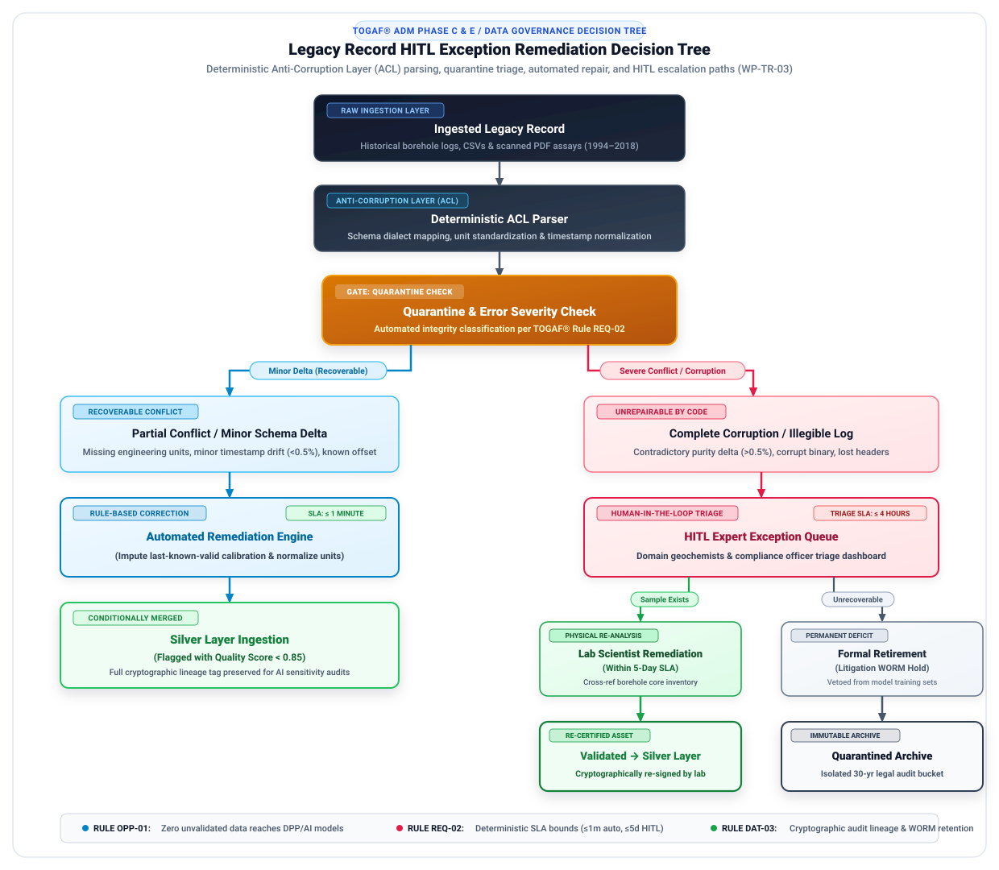
| Exception Classification | Trigger Criteria | Resolution Workflow | Target Resolution SLA | Escalation Authority |
|---|---|---|---|---|
| Minor Schema Drift | Missing units (ppm vs. %), alternative date formatting | Automated deterministic normalization in ACL parser | ≤ 1 Minute (Automated) | Data Pipeline Lead |
| Contradictory Assay Values | Regional database replica divergence (>0.5% delta) | Routed to Geochemist HITL queue; cross-reference physical borehole core samples | ≤ 5 Business Days | Senior Lab Metallurgist |
| Total Data Corruption | Illegible scanned logs, impossible dates (e.g. "Jan 32"), missing GPS | Formal record retirement; assign 'Historical Incomplete' status; isolate in litigation WORM store | ≤ 10 Business Days | Aarav Patel (Risk Guardian) + Legal |
🌐 Multilingual Data Governance & Extraction Site Normalization
Canonical Enterprise Language: English (ISO 639-1: en) serves as the immutable canonical standard for all Protobuf schemas, DPP metadata, and EAB audit filings.
Local Site Ingestion: Primary mining logs across South American, African, and Australian operations ingest raw records with mandatory iso_language_code headers. A dedicated NLP Translation Microservice (ABB-NLP-01) converts local field annotations into canonical English before promotion to the Silver Lakehouse tier.
8. Codified Interface Contracts: Protocol Buffer Specifications
In modern enterprise architecture, data contracts are not documented in ambiguous spreadsheets; they are codified into version-controlled, compiled Interface Definition Languages (IDL). Below are the production Protocol Buffer contracts implementing the Open Host Service / Published Language (OHS/PL) across the ecosystem.
8.1 Mineral Extraction Event Contract (`MineralBatchExtractionEvent.proto`)
Package: terra_resource.extraction.v1 — Published by drill edge gateways (WP-TR-01) upon batch completion.
syntax = "proto3";
package terra_resource.extraction.v1;
import "google/protobuf/timestamp.proto";
enum MineralType {
MINERAL_TYPE_UNSPECIFIED = 0;
MINERAL_TYPE_LITHIUM = 1;
MINERAL_TYPE_NICKEL = 2;
MINERAL_TYPE_COBALT = 3;
}
message GeoCoordinate {
double latitude = 1;
double longitude = 2;
double elevation_meters = 3;
string shaft_identifier = 4;
}
message DrillTelemetrySnapshot {
string drill_rig_id = 1;
double average_rpm = 2;
double peak_pressure_bar = 3;
double drill_head_temp_celsius = 4;
double vibration_rms = 5;
string hsm_sensor_auth_signature = 6;
}
message MineralBatchExtractedEvent {
string event_id = 1;
string batch_id = 2;
MineralType mineral_type = 3;
double gross_weight_metric_tons = 4;
GeoCoordinate extraction_location = 5;
DrillTelemetrySnapshot drill_telemetry = 6;
google.protobuf.Timestamp extraction_timestamp = 7;
string extraction_operator_id = 8;
bytes cryptographic_batch_hash = 9;
}
8.2 Digital Product Passport Contract (`DigitalProductPassport.proto`)[2][7]
Package: ecosystem.dpp.v1 — Shared Kernel contract published by DPP Trust Engine (WP-TR-04) and consumed by Volt-Tech & Orbit.
syntax = "proto3";
package ecosystem.dpp.v1;
import "google/protobuf/timestamp.proto";
message ElementalAssay {
string element_symbol = 1; // e.g. "Li", "Fe", "Ni"
double purity_percentage = 2; // e.g. 99.82
double contaminant_ppm = 3; // e.g. 12.4
bool battery_grade_qualified = 4; // Must be true for Volt-Tech intake
}
message ESGComplianceCertificate {
string certificate_id = 1;
string regulatory_filing_reference = 2;
double carbon_intensity_kg_co2_per_ton = 3;
double water_reclamation_ratio = 4;
string issuing_authority = 5;
google.protobuf.Timestamp clearance_date = 6;
}
message DigitalProductPassport {
string passport_id = 1; // Unique DPP UUID (e.g. "DPP-88210")
string origin_batch_id = 2;
string mineral_type = 3;
double net_weight_tons = 4;
// Geochemical Quality Layer
repeated ElementalAssay assay_results = 5;
string certified_laboratory_id = 6;
// Environmental Compliance Layer
ESGComplianceCertificate esg_clearance = 7;
// Cryptographic Chain of Custody
string origin_drill_hsm_signature = 8;
bytes root_merkle_provenance_hash = 9;
string issuer_digital_signature = 10;
google.protobuf.Timestamp issuance_timestamp = 11;
uint32 schema_version = 12; // Version 1
}
8.3 Protobuf Schema Evolution Policy & Version Compatibility[6]
In accordance with TOGAF® governance guidance and Consortium Rule GOV-02 (Zero Unrecorded Deviations), the Joint Standards Council ratifies strict schema evolution rules to ensure cross-enterprise forward and backward compatibility:
| Governance Principle | Evolution Rule & Constraint | Architectural Enforcement |
|---|---|---|
| Backward Compatibility | Existing consumers must parse newer messages without crashing (unknown fields ignored). | Never change existing tag numbers or field types; new fields are strictly additive. |
| Field Deprecation | Obsolete fields must be marked [deprecated = true] for ≥ 90 days. |
Deprecation notice logged in EAB Joint Standards Registry; compiler warnings emitted. |
| Breaking Schema Changes | Requires major version package bump (e.g. .v2) + formal EAB JSC vote. |
Dual-version ingestion gateway maintained during mandatory 180-day consumer migration. |
| DPP Payload Immutability | Minted DPP records are cryptographically sealed with root Merkle hashes. | Schema version updates apply only to newly minted batches; historical DPPs remain immutable. |
Schema Version Interoperability Matrix
| Producer Version | v1 Consumer (Orbit / Volt-Tech) | v2 Consumer (Volt-Tech Target) | v3 Consumer (Future EU Spec) |
|---|---|---|---|
| v1 Producer | ✅ Full Native Interop | ✅ Backward-Compatible | ✅ Backward-Compatible |
| v2 Producer | ✅ Forward-Compatible (Ignores v2 fields) | ✅ Full Native Interop | ✅ Backward-Compatible |
| v3 Producer | ⚠️ Review Required (Major Field Gap) | ✅ Forward-Compatible | ✅ Full Native Interop |
9. Fiduciary Business Case & Financial Schedule ($25M Investment)
Neha Desai's $25 million capital authorization is not an operational expense; it is a high-return capital restructuring that protects Terra-Resource's core commercial revenue while eliminating regulatory liabilities.
| Work Package / Investment Line | Year 0 (CapEx) | Year 1 (OpEx) | Year 2 (OpEx) | Year 3 (OpEx) | 3-Year Total |
|---|---|---|---|---|---|
| WP-TR-01: Drill Sensors & IoT Streamers | $6.2M | $0.4M | $0.4M | $0.4M | $7.4M |
| WP-TR-02: Automated Assay Pipeline | $4.8M | $0.3M | $0.3M | $0.3M | $5.7M |
| WP-TR-03: 30-Yr Legacy Data ACL | $3.5M | $0.2M | $0.1M | $0.0M (Sunset) | $3.8M |
| WP-TR-04: DPP Engine & OHS APIs | $5.5M | $0.6M | $0.6M | $0.6M | $7.3M |
| WP-TR-EN: Governance Academy & Change Mgmt | $5.0M | $0.5M | $0.4M | $0.3M | $6.2M |
| TOTAL INVESTMENT SCHEDULE | $25.0M | $2.0M | $1.8M | $1.6M | $30.4M |
Quantifiable Cash Flow Protections
- Revenue Protection: Preserves the $180M multi-year mineral supply contract with Volt-Tech.
- Batch Rejection Reduction: Slashes batch rejection rates from 14.2% to <0.1%, saving $11.4M annually in shipping and reprocessing penalties.
- ESG Regulatory Fine Avoidance: Automated audit compliance eliminates estimated $18.0M/year in EU supply chain transparency liabilities.
Fiduciary Financial Return Metrics
- Net Payback Period: 13.8 Months.
- Internal Rate of Return (IRR): 38.4%.
- 5-Year Net Present Value (NPV @ 10% Discount): $52.4M.
- Benefit-to-Cost Ratio (BCR): 2.82x.
10. Summary: Key Architecture Artifacts Produced in Phase C
- DDD Strategic Design Pipeline (Figure 5.1): The 4-stage pipeline connecting discovery to architecture.
- Event Storming Output (Figure 5.2): Complete mineral-to-passport timeline with domain events, commands, aggregates, policies, read models, and candidate boundaries.
- Domain Message Flow Model (Figure 5.3): Validated inter-context communication design showing asynchronous event-driven flows and synchronous integration points.
- Terra-Resource Strategic Context Map (Figure 5.4): Internal DDD context map with Customer–Supplier, Open Host Service / Published Language, Conformist, and Anti-Corruption Layer patterns.
- Multi-Enterprise Ecosystem Context Map (Figure 5.5): End-to-end strategic context map connecting Terra-Resource, Volt-Tech, and Orbit-Logistics with the Joint EAB Governance & Escrow Layer.
- Transition Architecture Roadmap (Figure 5.6): Phased migration timeline (States 1, 2, 3) with mandatory EAB stage-gate verifications.
- Legacy Record HITL Exception Decision Tree (Figure 5.7): Multi-tier quarantine, automated rule repair, and human-in-the-loop escalation workflow for legacy assay normalization (WP-TR-03).
- Predefined Work Package Portfolio (WP-TR-01 to WP-TR-04): Fully scoped and budgeted transition work packages.
- Codified Schema Contracts: Production Protocol Buffer definitions for `MineralBatchExtractionEvent.proto` and `DigitalProductPassport.proto`.
- Fiduciary Business Case & CapEx Schedule: $25.0M CapEx allocation delivering $52.4M in 5-year NPV with a 13.8-month payback.
📌 Phase Forward Handshake Nodes (Data Specifications Handover to Phase C2 & Phase D)
Phase C1 establishes the enterprise data governance bedrock and domain model, formally handing over the schemas, aggregate invariants, and contracts into Phase C2 (Application Architecture) and Phase D (Technology Architecture):
- Forward Directives for Phase C2 (Application Architecture):
- Aggregate Invariant Enforcement: Microservice domain services must enforce the consistency boundaries and business invariants defined in the Aggregate Design table.
- Context Mapping Contracts: Implement the Customer-Supplier, Anti-Corruption Layer (ACL), and Published Language patterns defined in the Architecture Board review matrix.
- Protobuf Schema Interoperability: Application API gateways and event consumers must strictly comply with the backward-compatibility and wire interoperability policy.
- Forward Directives for Phase D (Technology Architecture):
- Data Security & Encryption Tiers: Configure infrastructure to enforce AES-256-GCM encryption at rest and TLS 1.3 in transit per the Data Security Classification Register.
- Event Broker Sizing: Provision Kafka/MQTT broker clusters sized for the end-to-end multi-enterprise message flows and sub-cycle telemetry bursts.
- Hardware-Enforced Identity: Integrate HSM-backed asymmetric key signing for Digital Product Passport provenance tokens.
- Forward Directives for Phase E & F (Solutions & Migration Planning):
- Work Package Integration: Incorporate work packages WP-TR-01 through WP-TR-04 into the master consortium migration roadmap.
- Fiduciary Tranche Alignment: Release the $25M CapEx allocation strictly against audited completion of data mesh stage gates.
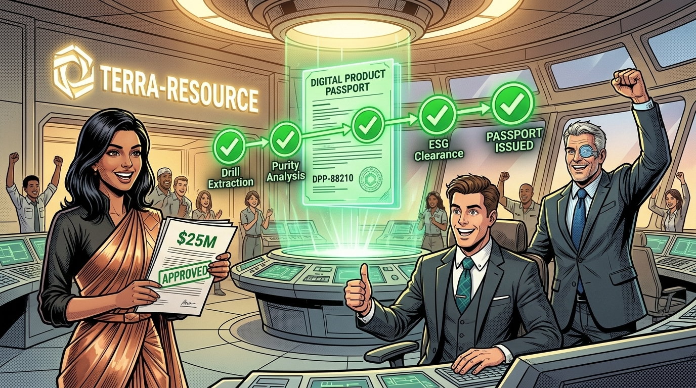

"Terra-Resource has turned data chaos into an enterprise asset. By applying Domain-Driven Design's strategic pipeline — Event Storming for discovery, Domain Message Flow Modeling for communication design, Context Mapping for strategic integration, and Predefined Work Packages for execution — the team has built a rigorous Data Architecture grounded in real domain knowledge."
"With clean mineral provenance secured through HSM-signed Digital Product Passports, Volt-Tech can now manufacture high-yield smart batteries without fearing upstream chemical liabilities."
"In Chapter 6: Solving Scalability Friction, our feed shifts back to Volt-Tech Manufacturing, where Rajesh Iyer must integrate advanced robotics and edge diagnostics onto the physical assembly line — executing TOGAF Phase D Technology Architecture with the clean data foundation Terra-Resource has now established."
⚠️ When Data Governance Breaks: Companion Exception Case 5
What happens when an unhandled network partition corrupts regulatory chain-of-custody data? Examine how a severed subsea trans-Atlantic fiber line caused a 45-second event lag across Kafka mirrors, causing race conditions that swapped Digital Product Passport (DPP) serial numbers, impounding $32M in electric trucks at the Port of Rotterdam, and mandating Rule DATA-06 (Multi-Enterprise Vector Clock Lineage).
Read Exception Governance Case 5: Severed Fiber Network Split & DPP Corruption →📌 Phase Gate 05 Exit Criteria: Data Architecture & Domain Contract Integrity
TOGAF® ADM Phase C — Pin-to-the-Wall Executive Sign-Off & Operational Gate Reference
Chapter 5 References & Fact-Check Verification Registry
This chapter's data architectures, domain modeling methods, and digital product passport schemas are formally grounded under our 5-Tier Epistemic Taxonomy:
-
[1]
[STANDARD]
The Open Group (2022). The TOGAF® Standard, 10th Edition: Phase C — Data Architecture. Van Haren Publishing. Clauses 6.1 to 6.4.
Fact-Check Verification: Specifies Data Entity to Business Function matrices (CRUD analysis), logical data models, data dissemination diagrams, and data security governance.↩ back to text
-
[2]
[STATUTE]
Regulation (EU) 2023/1542 concerning batteries and waste batteries, OJ L 191, 28.7.2023; & Regulation (EU) 2024/1781 establishing a framework for ecodesign requirements for sustainable products (ESPR), OJ L, 2024/1781, 28.6.2024.
Fact-Check Verification: Mandates Digital Product Passports (DPP) containing verified carbon footprint declarations, supply-chain due diligence provenance, and electrochemical batch composition accessible via decentralized identifiers.↩ back to text
-
[3]
[ACADEMIC]
Brandolini, A. (2021). Introducing EventStorming: An Agile Methodology for Rapid Domain Exploration. Leanpub.
Fact-Check Verification: Establishes the three progressive workshop formats (Big Picture, Process, Design-Level) and standardized sticky note semantic coloring (Orange for Events, Blue for Commands, Yellow for Aggregates, Red for Hotspots).↩ back to text
-
[4]
[ACADEMIC]
Tune, N. (2024). Architecture Modernization: Socio-technical Alignment of Software, Structure and Strategy. Manning Publications.
Fact-Check Verification: Defines Domain Message Flow Modeling as the socio-technical bridge between EventStorming and Context Mapping, validating sync/async message flows and bounded context autonomy.↩ back to text
-
[5]
[INDUSTRY]
DAMA International (2017). DAMA-DMBOK: Data Management Body of Knowledge (2nd Edition). Technics Publications.
Fact-Check Verification: Rules for Master Data Management (MDM), System of Record (SoR) designations, and data quality dimensions (Accuracy, Completeness, Timeliness, Lineage).↩ back to text
-
[6]
[STANDARD]
Google LLC (2023). Protocol Buffers Language Specification (proto3) & The Apache Software Foundation Apache Avro Schema Evolution Guarantees.
Fact-Check Verification: Backward and forward binary compatibility rules: field tag immutability, reserved index allocation, and additive-only schema evolution policies.↩ back to text
-
[7]
[SIMULATION]
Terra-Resource DPP Contract & Master Data Model (`ecosystem.dpp.v1`).
Fact-Check Verification: Simulated Protocol Buffer IDL schemas and cryptographic Merkle provenance tokens model how multi-enterprise raw mineral certifications are verified in production.↩ back to text